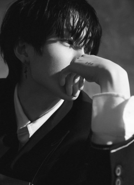
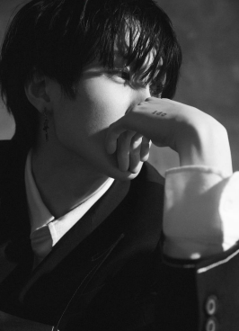
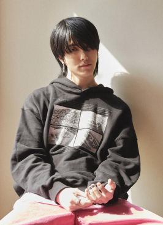
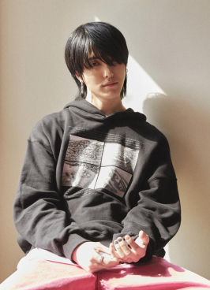

Born in Chicago in 2001, Jhin grew up with his mother and younger sister. He found himself surrounded by his mother's love for emotional Korean ballads. And he was also heavily influenced by his hometown’s emo music wave. His whole life, he only played the part of being a consumer of music. Never being given a chance due to his parental expectations of going to law school, Jhin reluctantly ceased all opportunities that came his way.
During his time at New York University, he would try to involve himself into different fields of study, but failed to find enjoyment and purpose in doing so. While his friends were out partying, he found himself in alienation, as he sat on the edge of his bed in his apartment, looking into the city skyline, and contemplated deeply on what he wanted to do with his life.
The very next day, he packed his bags and moved to Seoul, South Korea, where he connected with his mentor, 220. With no musical background, Jhin honed and procured his sound with the help of his mentor. Meshing his musical influences and his life-experiences, Jhin is able to create relatable and playful melodies.
 

 
